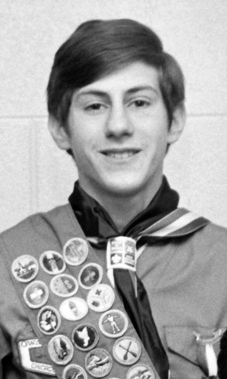

Francis J. Podbielski was inducted into Ordeal Membership on June 12, 1976 through the Ojibwa Chapter of Owasippe Lodge #7. Quickly seizing the opportunities made available to him by Chapter Adviser Norman C. Buettner, Francis became the Chapter Treasurer, and then Corresponding Scribe. He served as the last Chief of Ojibwa Chapter in 1979 and the first Chief of Achewon Chapter in 1980 (after a merge of Districts/Chapters). For his outstanding service to the Lodge and the Council he was called to the Vigil Honor on May 23, 1981 – being given the name "Wischiki" – Busy One.
During his subsequent 17 year tenure as Chapter Adviser, his youth officers developed an alternating, annual District aquatics/land based merit badge clinic, were the first in the Lodge to computerize their membership records and mailing roster, and coordinated the annual kick-off dinner for the District each year. These junior O/A officers became his core staff during his four year tenure as District Chairman which he started at age 29 while a general surgery resident in training.